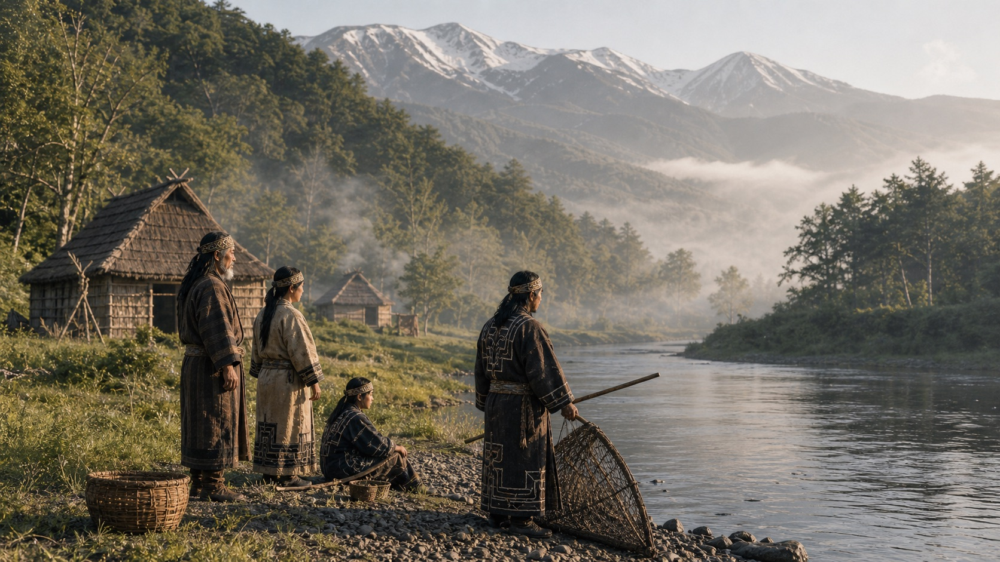
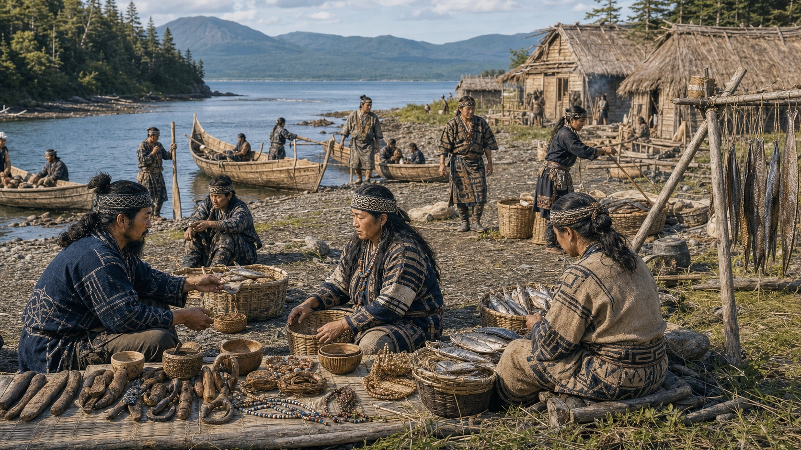
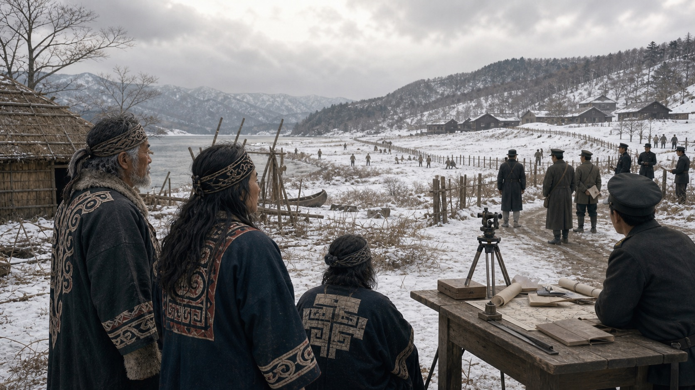
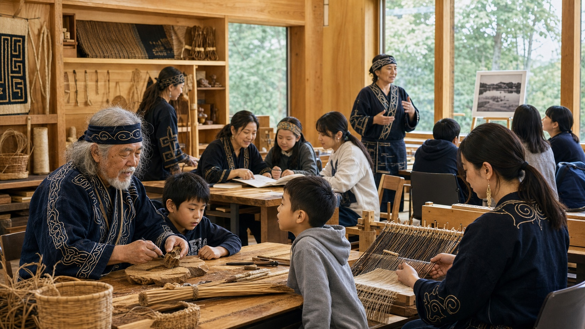

Falar do povo Ainu é abrir uma parte do Japão que muita gente só descobre tarde: o Japão não foi culturalmente homogêneo, nem nasceu pronto como um bloco único. No norte do arquipélago, especialmente em Hokkaido, Sakhalin e nas ilhas Curilas, existiram povos, línguas, redes de troca e cosmologias que não cabem na ideia simplificada de “um Japão só”.
Os Ainu são reconhecidos hoje como povo indígena do Japão. A palavra aynu, em muitas explicações culturais, é associada à ideia de “ser humano”, em contraste com os kamuy, as forças espirituais ou divindades presentes em animais, plantas, fogo, água, montanhas e fenômenos. Essa visão não separava natureza, sobrevivência e espiritualidade como gavetas isoladas.
Nota sobre as imagens: as imagens desta matéria são ilustrações editoriais geradas para contar a narrativa histórica. Elas não devem ser lidas como fotografias de arquivo, reconstruções acadêmicas exatas ou reprodução de objetos sagrados.
De onde vieram os Ainu
Não existe um “dia de nascimento” do povo Ainu. A identidade Ainu se formou ao longo de séculos no norte, a partir de camadas culturais anteriores, como tradições arqueológicas de Hokkaido ligadas ao mundo Jomon, ao complexo Satsumon e a contatos com povos da região de Okhotsk. Em termos históricos, muitos pesquisadores situam a formação da cultura Ainu clássica por volta dos séculos XII a XIII, quando modos de vida, língua, comércio e organização territorial se consolidaram de maneira mais reconhecível.
Esse detalhe importa: os Ainu não eram um povo “parado no tempo”. Eram parte de uma zona dinâmica entre o arquipélago japonês, Sakhalin, o continente asiático e as ilhas do norte. Caçavam, pescavam, coletavam, plantavam em algumas áreas, produziam objetos, narravam epopeias orais e negociavam mercadorias.
Kotan, rios e comércio
As comunidades Ainu viviam em aldeias chamadas kotan, frequentemente próximas de rios, lagos e rotas de pesca. O salmão era central para alimentação, economia e imaginário. Cervos, plantas silvestres, pele, madeira, fibras, ferramentas e objetos de troca também faziam parte do cotidiano.
Ao contrário da imagem de isolamento, os Ainu participaram de redes comerciais importantes. Por meio de trocas com japoneses, povos de Sakhalin e outros grupos do norte, circulavam produtos como peles, peixe seco, aves, tecidos, objetos de ferro, contas e utensílios. Hokkaido era periferia para o Estado japonês, mas não era vazio.

Língua, memória e kamuy
A língua Ainu é geralmente tratada como uma língua isolada, sem parentesco comprovado com o japonês. Ela foi transmitida sobretudo pela oralidade: narrativas, cantos, histórias épicas chamadas yukar, nomes de lugares e conhecimento de plantas, animais e território. A perda de falantes no século XX tornou a revitalização linguística uma das frentes mais urgentes.
A cosmologia Ainu via o mundo como relação. Animais, fogo, água, vento e objetos podiam carregar presença de kamuy. Isso não significa uma “religião exótica” no sentido superficial; era uma forma de organizar reciprocidade, gratidão, cuidado e limites entre humanos e ambiente.
Contato com japoneses e conflitos
A relação com japoneses se intensificou especialmente a partir do sul de Hokkaido, onde o clã Matsumae controlou comércio e acesso. Essa relação nunca foi simplesmente pacífica ou igual. O comércio gerava dependência, exploração e restrições, enquanto a presença japonesa avançava sobre territórios e rotas.
Ao longo dos séculos, ocorreram revoltas e conflitos, como a guerra de Koshamain no século XV, a revolta de Shakushain em 1669 e o levante de Menashi-Kunashir em 1789. Esses episódios revelam que os Ainu não foram apenas “absorvidos”: resistiram a relações comerciais injustas, perda de autonomia e violência política.
Meiji e a colonização de Hokkaido
A virada mais profunda veio no período Meiji. Em 1869, Ezochi passou a ser administrado como Hokkaido, e o governo japonês tratou a região como fronteira a desenvolver, ocupar e integrar. Terras antes usadas por comunidades Ainu foram incorporadas pelo Estado, colonos japoneses chegaram em massa, e práticas tradicionais de caça e pesca passaram a sofrer restrições legais.
A política oficial não era preservar autonomia Ainu; era transformar os Ainu em súditos japoneses assimilados. A Lei de Proteção aos Antigos Aborígenes de Hokkaido, de 1899, tinha linguagem paternalista e efeitos de apagamento: incentivava agricultura sedentária, marginalizava língua e costumes e enquadrava os Ainu como grupo a ser “civilizado” dentro do modelo japonês.

Século XX: discriminação e sobrevivência
No século XX, muitos Ainu viveram empobrecimento, discriminação escolar, vergonha imposta e apagamento identitário. Parte das famílias deixou de ensinar a língua para proteger filhos de preconceito. Muitos passaram a se identificar publicamente apenas como japoneses, não porque a identidade Ainu desapareceu, mas porque revelá-la podia significar exclusão.
Ao mesmo tempo, houve resistência cultural. Intelectuais, artistas, líderes comunitários e famílias preservaram histórias, vocabulário, bordados, dança, música, nomes, técnicas e memória. Chiri Yukie, que registrou narrativas Ainu no início do século XX, e Kayano Shigeru, ativista, pesquisador e depois parlamentar, são nomes fundamentais para entender essa sobrevivência transformada em ação pública.
Da cultura ao reconhecimento legal
Em 1997, a antiga lei de 1899 foi substituída pela Lei de Promoção da Cultura Ainu. No mesmo período, a decisão judicial sobre a barragem de Nibutani marcou um ponto simbólico importante, ao reconhecer danos ligados à cultura Ainu no contexto de uma obra pública. Ainda era pouco, mas rompia a ideia de que a questão Ainu era apenas folclore.
Em 2008, o Parlamento japonês aprovou uma resolução reconhecendo os Ainu como povo indígena. Em 2019, entrou em vigor uma lei voltada à realização de uma sociedade em que o orgulho do povo Ainu seja respeitado. A página oficial do Gabinete do Governo japonês apresenta essa lei e a política de apoio a planos regionais, cultura, indústria, turismo, educação e intercâmbios.
Upopoy e o presente
Em 2020, foi aberto em Shiraoi, Hokkaido, o Upopoy, complexo nacional dedicado à história e cultura Ainu, incluindo o Museu Nacional Ainu. A instituição se apresenta como centro nacional para aprender e promover a história e a cultura Ainu. Isso ampliou a visibilidade, mas também trouxe uma tensão: transformar uma cultura viva em exposição pode educar, mas também pode congelar identidades se não houver protagonismo Ainu.
Hoje, a retomada aparece em aulas de língua, música, dança, artesanato, pesquisa, museus, turismo cultural, reivindicações por direitos de pesca, debates sobre território e ações contra discriminação. A cultura Ainu não está apenas “preservada” em vitrine; ela continua sendo reconstruída por pessoas vivas, famílias, professores, artistas e comunidades.

Linha do tempo essencial
- Antes do século XIII: camadas culturais do norte, com continuidades e contatos entre Hokkaido, Sakhalin, Curilas e o continente.
- Séculos XII-XIII: consolidação gradual da cultura Ainu clássica em aldeias, redes de troca e território do norte.
- Séculos XV-XVIII: aumento da pressão comercial japonesa e conflitos como Koshamain, Shakushain e Menashi-Kunashir.
- 1869: Ezochi passa a ser Hokkaido; o Estado Meiji acelera colonização, ocupação e integração territorial.
- 1899: Lei de Proteção aos Antigos Aborígenes de Hokkaido institucionaliza uma política assimilacionista.
- 1997: nova lei de promoção cultural substitui a lei de 1899; a decisão de Nibutani ganha importância simbólica.
- 2008: resolução parlamentar reconhece os Ainu como povo indígena.
- 2019: nova lei nacional estabelece medidas para uma sociedade em que o orgulho Ainu seja respeitado.
- 2020 em diante: Upopoy aumenta a visibilidade, enquanto comunidades seguem reivindicando memória, língua, direitos e respeito.
Por que essa história importa
A história Ainu desmonta a ideia confortável de um Japão sem povos indígenas. Ela mostra que modernização também pode significar colonização interna, que cultura pode sobreviver mesmo sob silêncio forçado, e que reconhecimento legal não apaga automaticamente desigualdades acumuladas.
Para brasileiros no Japão, conhecer os Ainu muda o olhar sobre Hokkaido, sobre nomes de lugares, sobre museus, sobre turismo e sobre a própria ideia de identidade japonesa. O povo Ainu não é uma nota de rodapé do passado: é uma presença histórica que continua disputando memória, dignidade e futuro.